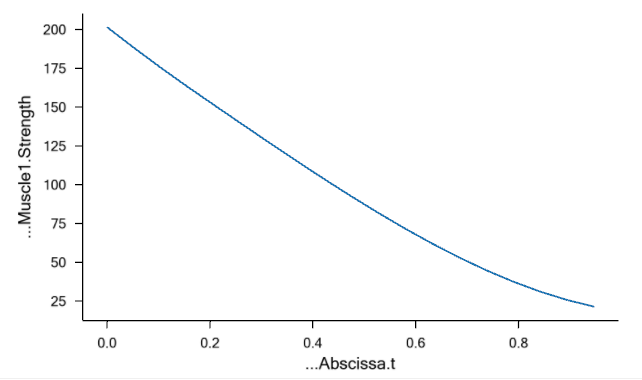

Lesson 7: Calibration¶
Note
The following tutorial will explain how to set up your simple calibration study. Calibration is already built into the AMMR, :ammr:doc`see the AMMR documentation <index>` for more details.
One of the challenges in body modeling is that models must be able to change size to reflect individuals of different statures. Even if you are working on a model of a particular individual, you will almost always want to change the dimensions of the model as you are building it. And if you are developing a generic model to represent a range of body proportions, you are likely to want the model to depend on the anthropometrical parameters you define. For instance, the weight of a segment is often represented as some fraction of the full body weight. Such a property you could make parametric by simply defining it as a function of the full body weight by means of a simple formula.
But other dimensions are more subtle and difficult to establish as a direct functional dependency of other parameters. Tendon lengths are perhaps the most prominent example. If you are in doubt of the importance of tendon lengths, just try to bend over and touch your toes with your knees stretched. Some of us have hamstring tendons that are so short that we can hardly reach beyond our knees, so tendon lengths directly limit our ranges of motion. But they also influence the working conditions of our muscles even when the muscle-tendon unit is not stretched to its limit, so it is important that we define the muscle tendon unit so that it fits the body model.
A muscle-tendon unit is attached to at least two segments at its origin and insertion respectively. To make things worse, some muscles span several joints, and most muscles wrap over bones and other tissues with complex geometries on their way from origin to insertion. So, the basic idea behind calibration of tendon lengths in AnyBody is the assumption that each muscle-tendon unit has its optimal length at some particular position of the joints it spans. We simply define one or several studies that put the body model in these positions and adjust the lengths of the tendons to give the attached muscles their optimal lengths in those positions. When you subsequently run an analysis, the system uses the calibrated tendon lengths regardless of how they are defined in the AnyScript file. (This means that you have to run the calibration(s) every time you have reloaded the model if they are to take effect).
AnyBody has several different types of muscle models. Some are very simple and contain no strength-length relationship, while others do. It goes almost without saying that the former type is not affected by calibration. If you use one of the latter - more advanced - models, however, calibration may be crucial. If the tendon is too long, the muscle will end up working in an unnaturally contracted state where it has very little strength. If the tendon is too short, the muscle will be stretched, and its passive elasticity will affect the force balance in the system. Since the passive elastic force in a muscle-tendon unit typically grows very rapidly with stretching, a too short tendon can cause very large antagonistic muscle actions.
Enough talk! Let’s define a muscle and calibrate it. We shall begin with
the simple arm model we developed in the “Getting Started: AnyScript
Programming” tutorial. If you have not already saved the model in a
file, get it here: arm2d.any.
In that simple example, all the muscles were assumed to be of a simple type with constant strength. We shall add another and much more detailed muscle model:
AnyFolder Muscles = {
// Simple muscle model with constant strength = 300 Newton
AnyMuscleModel MusMdl = {
F0 = 600;
};
AnyMuscleModel3E BicepsLongModel = {
AnyVar PCSA = 2.66; // Physiological cross sectional area [cm^2]
F0 = PCSA*30; // Presuming a maximum muscle stress of 30 N/cm^2
Lf0 = 0.123; //Optimum fiber length [m]
Lt0 = 0.26; //First guess of tendon slack length [m]
Gamma0 = 0.3*(pi/180); //Pennation angle converted to radians
Epsilon0 = 0.053; //Tendon strain at F0
K1 = 10; //Slow twitch factor
K2 = 0; //Fast twitch factor(zero when no info available)
Fcfast = 0.4; //Percentage of fast to slow factor
Jt = 3.0; //Shape parameter for the tendon stiffness
Jpe = 3.0; //Shape parameter for the parallel stiffness
PEFactor = 5.0; //Parameter for influence of parallel stiffness
}; // End of BicepsLongModel
//---------------------------------
AnyViaPointMuscle Brachialis = {
As you can see from the comments, the muscle has many parameters you have to set. The significance of each of these is explained in detail in the muscle modeling tutorial. For this model to take effect, we must assign it to the biceps long muscle. It is a little further down in the file, where the red line must be changed:
//---------------------------------
AnyViaPointMuscle BicepsLong = {
AnyMuscleModel &MusMdl = .BicepsLongModel;
AnyRefNode &Org = ..GlobalRef.BicepsLong;
AnyRefNode &Ins = ..Segs.ForeArm.Biceps;
AnyDrawMuscle DrwMus = {};
};
What we have done here is to give BicepsLong a new and more advanced muscle model. In this lesson, we also switch to a different muscle recruitment criteria MR_MinMaxStrict, which is better suited for InverseDynamics of overloaded models:
AnyBodyStudy ArmStudy = {
AnyFolder &Model = .ArmModel;
InverseDynamics.Criterion.Type = MR_MinMaxStrict;
Gravity = {0.0, -9.81, 0.0};
};
Let’s have a look at the consequences. Press Load button or F7 and subsequently run the InverseDynamics study. Then, press Ctrl + 1 to navigate to the Chart to investigate the results.

This graph shows the muscle force or more precisely the force in the tendon. The force in this more complex muscle model is composed of 3 elements: Fm, the muscle force is the force from the contractile element of the muscle. Parallel to Fm is Fp which is the passive elastic element in the muscle. Conected in series of the muscle, is the tendon where Ft is the elastic tendon force. If you pick the Fp property, you should get the following graph:

The parallel-elastic force Fp sets in when the muscle is stretched beyond its optimal fiber length. In the movement of this example, the elbow starts at 90 degrees flexion, and as the graph shows, this gives rise to about 0.7 N of passive force at the beginning of the movement. This indicates that the tendon we have specified is too short. If the movement was extending the elbow instead of flexing it, the passive force would rise. This means that the result of the simulation depends a lot on having the correct length of the tendon. If it is too short, too much of the load will be carried by passive muscle forces. In this example where we have only one muscle with a complex model, it would not be too difficult to adjust the tendon length manually until we get it right, but in models with many muscles, this can be a very tedious task, particularly since it has to be repeated every time the dimensions of the model are changed. Instead, the answer is to let AnyBody calibrate the tendon length automatically.
AnyBody’s advanced muscle model, the AnyMuscleModel3E, is basically a phenomenological model based on the classical works of Hill. It presumes that each muscle has an optimum contraction in which its fibers have their best force-producing capability. To do a simple 1 parameter calibration we would need to know the set of joint positions corresponding to this optimum fiber length for each muscle, then those joint positions were the ones we would be calibrating the muscle in.
Calibrating the muscle in a particular position requires a calibration study. Its basic definition is straightforward:
// =======================================================
// "The body study"
// =======================================================
AnyBodyStudy ArmModelStudy = {
AnyFolder &Model = Main.ArmModel;
InverseDynamics.Criterion.Typer = MR_MinMaxStrict;
Gravity = {0.0, -9.81, 0.0};
};
// A new calibration study
AnyBodyCalibrationStudy CalibrationStudy = {
AnyFolder &Model = Main.ArmModel;
nStep = 1;
}; // End of study
If you load the model you can study the structure of the new study in the Operations tab:

You can see that it has multiple operations. The interesting ones are the two latter: TendonLengthAdjustment and LigamentLengthAdjustment. As the names indicate, they are for tendon and ligament calibration respectively. Notice that the study only has one time step. The model posture in that step should be the position in which you wish to calibrate the tendon. If you run the TendonLengthAdjustment operation you will notice that the model takes the initial posture of the flexion movement it was doing in the InverseDynamics. This is because of the line
AnyFolder &Model = Main.ArmModel;
The ArmModel contains movement drivers, and when they are included in the study they cause the model to attain the same posture in the calibration study as it does in the inverse dynamic analysis. To be able to calibrate in another posture we must perform a small restructuring of the model and perhaps recommend a organizing things a little differently in general when making models.
We included the movement in the model when we developed it in the “Getting Started with AnyScript” tutorial because we wanted things to be simple. But think for a moment about how you would typically want to use models. Let’s imagine you have developed a model of a leg. One day you might want to simulate squat, another day perhaps gait, and yet another day a football kick. You would want to use the same model but with different sets of drivers. This speaks in favor of having drivers, loads, and other problem-specific properties outside the folder containing the body model.
Calibration is actually an example of using the same model with two different movements, so we have to place the drivers outside the ArmModel folder. In the editor, highlight the entire Drivers folder, cut it out, and paste it in right below the end of the ArmModel folder like this:
}; // MyModel
AnyFolder Drivers = {
//---------------------------------
AnyKinEqSimpleDriver ShoulderMotion = {
AnyRevoluteJoint &Jnt = Main.ArmModel.Jnts.Shoulder; // Changed!
DriverPos = {-100*pi/180};
DriverVel = {30*pi/180};
Reaction.Type = {Off};
}; // Shoulder driver
//---------------------------------
AnyKinEqSimpleDriver ElbowMotion = {
AnyRevoluteJoint &Jnt = Main.ArmModel.Jnts.Elbow; // Changed!
DriverPos = {90*pi/180};
DriverVel = {45*pi/180};
Reaction.Type = {Off};
}; // Elbow driver
}; // Driver folder
Notice that after moving the Drivers folder we have changed the references to the joints. We also have to change the study a little bit. This is because the study points at the ArmModel folder and that no longer contains a movement, so the study would not know how to move the model, unless we add this line:
// The study: Operations to be performed on the model
AnyBodyStudy ArmStudy = {
AnyFolder &Model = .ArmModel;
AnyFolder &Drivers = .Drivers;
InverseDynamics.Criterion.Type = MR_MinMaxStrict;
Gravity = {0.0, -9.81, 0.0};
};
Now we are ready to define a couple of static drivers specifically for calibration of the muscles. We create a CalibrationDrivers folder right below the Drivers folder:
}; // Driver folder
AnyFolder CalibrationDrivers = {
//---------------------------------
AnyKinEqSimpleDriver ShoulderMotion = {
AnyJoint &Jnt = Main.ArmModel.Jnts.Shoulder;
DriverPos = {-90*pi/180}; // Vertical upper arm
DriverVel = {0.0};
Reaction.Type = {Off};
};
//---------------------------------
AnyKinEqSimpleDriver ElbowMotion = {
AnyJoint &Jnt = Main.ArmModel.Jnts.Elbow;
DriverPos = {30*pi/180}; // 30 degrees elbow flexion
DriverVel = {0.0};
Reaction.Type = {Off};
};
};
// The study: Operations to be performed on the model
These drivers are static because their velocities are zero. They specify a posture with the upper arm vertical and the elbow at 30 degrees flexion. Notice the expressions converting degrees to radians.
The final step is to modify the calibration study is to use the calibration drivers:
// A new calibration study
AnyBodyCalibrationStudy CalibrationStudy = {
AnyFolder &Model = Main.ArmModel;
AnyFolder &Drivers = .CalibrationDrivers;
nStep = 1;
}; // End of study
What we have now is a study that uses the model together with two static drivers for calibration of the muscles, and a study that uses the model with the previous set of dynamic drivers. If you run the CalibrationStudy TendonLengthAdjustment first, the system will adjust the tendon lengths and remember the values for the until the model is reloaded. Now run the InverseDynamics study and have a look at the chart. Notice that the Fp passive muscle force now is zero because the BicepsLongModel slack length Lt0 was elongated by the calibration.
Here’s a link to the finished calibration.any example.
 Fix it your self
Fix it your self